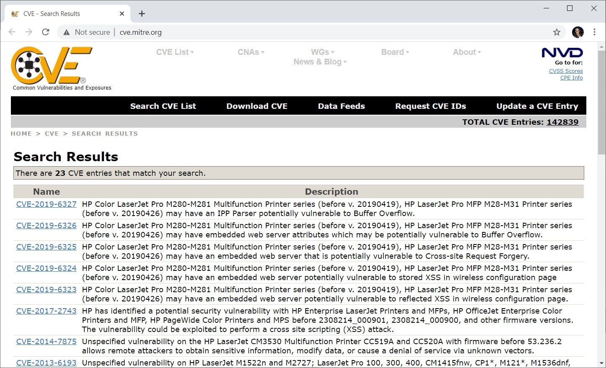

Introduction
bb1840e4-5425-49a3-9d75-477b8f016ff8
Welcome to the Cyber Security Vulnerabilities of Embedded Systems Practice Lab. In this module, you will be provided with the instructions and devices needed to develop your hands-on skills.
dc640c20-9434-45ea-b7c2-6d4d6a196bfc
Learning Outcomes
In this module, you will complete the following exercise:
- Exercise 1 - Security Implications of Embedded and Specialized Systems
After completing this module, you should have further knowledge of:
- Embedded System
- System Control and Data Acquisition (SCADA)/Industrial Control System (ICS)
- Internet of Things (IoT)
- Specialized
- Voice Over IP (VoIP)
- Heating, Ventilation, Air Conditioning (HVAC)
- Drones
- Autonomous Vehicles
- Multifunction Printer (MFP)
- Real-time Operating System (RTOS)
- Surveillance Systems
- System-on-Chip (SoC)
- Constraints
Exam Objectives
The following exam objectives are covered in this lab:
2.6 Explain the security implications of embedded and specialized systems.
- Embedded Systems
- System Control and Data Acquisition (SCADA)/Industrial Control System (ICS)
- Internet of Things (IoT)
- Specialized
- Voice Over IP (VoIP)
- Heating, Ventilation, Air Conditioning (HVAC)
- Drones/AVs
- Multifunction Printer (MFP)
- Real-Time Operating System (RTOS)
- Surveillance Systems
- System on Chip (SoC)
- Constraints
Note: Our main
focus is to cover the practical, hands-on aspects of the exam
objectives. We recommend referring to course material or a search engine
to research theoretical topics in more detail.
Lab Duration
It will take approximately 30 minutes to complete this lab.
6cde82b4-969e-4ba2-9a1b-b030a82e21d0
Help and Support
For more information on using Practice Labs, please see our Help and Support page. You can also raise a technical support ticket from this page.
Click Next to view the Lab topology used in this module.
d2c53300-f951-45a9-9aa4-3d4ecae69e11
Lab Topology
This module contains supporting materials for Security+.

Click Next to proceed to the first exercise.
<
Home |
README >
CompTIA Security+ Practice Labs
Exercise 1 - Security Implications of Embedded and Specialized Systems
In today’s world, you are likely to be interacting
with one or more specialized technologies. Examples of specialized
technologies include mobile devices, embedded systems, Internet of
Things (IoT), or even Supervisory control and data acquisition (SCADA).
Each of these technologies is designed to serve a specific purpose.
However, most of these technologies are complex. There
may be millions of lines of code running to enable the different
components to implement the technology. A large codebase is bound to
introduce vulnerabilities.
In this exercise, you will learn about the vulnerabilities and security implications of embedded and specialized systems.
Learning Outcomes
After completing this exercise, you should have further knowledge of:
- Embedded System
- System Control and Data Acquisition (SCADA)/Industrial Control System (ICS)
- Internet of Things (IoT)
- Specialized
- Voice Over IP (VoIP)
- Heating, Ventilation, Air Conditioning (HVAC)
- Drones
- Autonomous Vehicles
- Multifunction Printer (MFP)
- Real-time Operating System (RTOS)
- Surveillance Systems
- System-on-Chip (SoC)
- Constraints
Your Devices
This exercise contains supporting materials for Security+.

Embedded System
Embedded systems are devices that contain a central
processing unit (CPU) of their own. This CPU runs an operating system
and some applications to perform certain specialized functions. Examples
of embedded systems include:
- Automatic Teller Machine (ATM)
- Printers
- Digital watches
- Digital cameras
- Automobiles
If an embedded system connects to the Internet, it becomes an IoT device.
An embedded system can have the following vulnerabilities:
- An overload of tasks may cause scheduling problems
- Can be attacked as there is no built-in security
- Prone to power drain attack in which the battery of the device is drained out
Raspberry Pi and Arduino
Raspberry Pi and Arduino are small electronic-boards
used to automate certain tasks or even configure home automation. Both
these boards are prone to attacks, such as password attack,
man-in-the-middle attack, ARP cache poisoning, Cross Site Scripting
(XSS), and Sniffing.
Vulnerabilities can be due to these boards or even
the devices or the communication protocols of the devices. For example,
if these boards are automated to use Near Field Communication (NFC) for
unlocking a door, the attacker can break this system and have access to
the door.
You may also develop or use a Web interface to manage
your devices through these boards. The Web interface can also be prone
to attacks if not secured properly. Moreover, a device interacting with
another device or server on the Internet might attract hackers and
malware.
Field Programmable Gate Array (FPGA)
An FPGA is a programmable chip that does not have any
pre-programmed functions, unlike many other chips. It can be programmed
as required. When FPGA needs to be used, it needs to be first
programmed and configured as per need. For example, any chip that you
find in a system or any device has a pre-defined function. If you take
out that chip, the device can no longer perform that function. FPGA can
be programmed to function as any chip that you find in a device or
system.
When you program an FPGA chip, you can allow
multi-user access to it. However, this opens the door for the attackers
to conduct side-channel attacks. In this type of attack, the attackers
use the FPGA’s energy consumption to break the encryption.
System Control and Data Acquisition (SCADA)/Industrial Control System (ICS)
Supervisory Control and Data Acquisition (SCADA)
systems are known as the industrial control systems (ICS). These systems
acquire data from specified points in an industrial process and use it
to control the industrial process and machinery.
An example of SCADA systems application is the energy
domain, where SCADA systems manage electricity distribution over a
large geographical area.
SCADA systems present inherent vulnerabilities that
have been exploited, and SCADA systems have been attacked multiple times
across the world. Common vulnerabilities of SCADA systems include:
- Unmonitored systems: SCADA systems are
typically unmonitored. There is no active or continuous monitoring for
suspicious activities. This makes it difficult to detect an attack when
it takes place.
- Passwords: SCADA systems have built-in
authentication to enable configuration and modification. However, human
negligence towards protection measures can lead to compromise of the
systems. For example, system administrators might use simple passwords
or share passwords, leading to system security issues.
- Poor updates management: SCADA systems need
to be updated with the latest firmware and software from time to time.
However, missing updates or inherent vulnerabilities in the updates can
prove to be an open-door for the attackers.
- Inadequate input validation: SCADA systems
may need some user inputs. SCADA systems should be built to validate
these inputs thoroughly. Insufficient validation can allow attackers to
execute arbitrary code. For example, an earlier version of the
open-architecture WebAccess/SCADA system from Advantech did not validate
the user input and was compromised.
Components of a SCADA system that can be a target for the attacker:
- Human Machine Interfaces (HMIs): SCADA system
uses these interfaces to present data to the users after collecting it
from various sensors. If not secured properly, they can be a target for
the attackers.
- Mobile and Web Applications: SCADA systems
can be accessed using a mobile device or a Web application. The
attackers can exploit any vulnerabilities in the accessed devices.
- Protocols: SCADA systems use various
protocols, such as Modbus and Profinet. These protocols lack a strong
security mechanism. Data traveling over these protocols can be
intercepted and altered by malicious players.
Internet of Things (IoT)
An IoT device is hardware that can collect data and
communicate the data to other devices over the Internet. Each IoT device
has an IP address that can be used for communication as well as remote
monitoring and controlling. In other words, anything that uses a sensor
and has the capability of autonomous computing can be assigned an IP
address and configured as a smart device.
Sensors used by IoT devices include:
- Temperature
- Humidity
- Acceleration
- Gyro
- Accelerometers
For example, if you add a sensor and computing
capability to a refrigerator, it becomes a smart device that can be
networked as an IoT device.
Another example of IoT devices is wearable devices,
such as activity trackers or pedometers built into watches. A pedometer
fitted watch informs you about the steps walked in a day, week, or
month. They can share or send this data to a remote server, mostly in
the cloud, set up by a manufacturer.
At present, IoT devices are being used for automation
across various industries, such as consumer electronics, travel,
energy, healthcare, agriculture, facilities, and security. For example,
several housing societies and office complexes use smart lighting. These
lights go dim when the footfall is low and brighten up when the
footfall is heavy. This is an example of facility automation that uses
sensors to detect the footfall and is smart enough to respond according
to the data captured.
The increased use of IoT devices has increased the
risks of their inherent vulnerabilities. Open Web Application Security
Project (OWASP) has listed the following top 10 vulnerabilities for IoT:
1. Weak, Guessable, or Hardcoded Passwords
The IoT devices can have hardcoded passwords or can
run on default passwords. Default passwords are normally weak, as well
as guessable. These passwords can be brute-forced and provide a backdoor
entry into the IoT devices.
2. Insecure Network Services
IoT devices use insecure network services that are
exposed to the Internet. This leaves a wide room for compromise of
integrity, confidentiality, availability, and privacy of the exchanged
information.
3. Insecure Ecosystem Interfaces
Insecure interfaces, such as Application Programming
Interfaces (APIs) that do not use secure encryption methods or
authentication, can be easily exploited to compromise the information.
4. Lack of Secure Update Mechanism
IoT devices frequently receive firmware and software
updates. These updates must be secure and must be validated before
installation. This security setting is missing for the IoT devices.
Moreover, there is no method to rollback any unsuitable update
installed.
5. Use of Insecure or Outdated Components
The IoT devices suffer from the use of insecure or
outdated components, including the operating system and the software
running. Insecure or outdated components have vulnerabilities that can
be easily exploited.
6. Inadequate Privacy Protection
The personal information collected by the IoT is open
to unauthorized access because the information is exchanged with other
devices without user permission.
7. Insecure Data Transfer and Storage
The user’s data is not encrypted when it is in
storage or transmission. This leaves the information unguarded if the
device is hacked or the transmission route is compromised.
8. Lack of Device Management
IoTs do not have a defined device management routine
or secure method of commissioning or decommissioning of devices. This
leaves the network of devices open to unauthorized devices connecting
in.
9. Insecure Default Settings
Most of the IoT devices are shipped with insecure
default settings. Moreover, some of these devices do not provide a
method to change the default configuration. Therefore, users might use
the IoT devices with the insecure default configuration.
10. Lack of Physical Hardening
Unlike a system or a laptop, there is hardly any
physical hardening of the IoT devices. This allows an attacker to
exploit a vulnerability and control the devices remotely.
Specialized
With the advancement of technology, specialized
systems have made their place in everyone’s day-to-day lives. Examples
are medical equipment, airplanes, smart meters, or even automatic
vehicles. With the increasing use of these systems, the security issues
and vulnerabilities relevant to these systems can impact everyday life
in a big way. It is also a fact that all hardware devices, be it small
or large, need to be managed and maintained using an application.
Let’s look at some of the security issues and vulnerabilities with these specialized systems.
Medical Systems
Just like any other system, medical systems have security issues and vulnerabilities:
- Medical and other hospital staff has access to these
systems. This implies widespread access and hence a greater potential
of information leak.
- Medical equipment might share the network with
hospital systems. Therefore, any malware or phishing attacks on hospital
systems might affect the medical systems as well.
- With several vendors working with the hospitals,
several entry points into the hospital network may be opened. These
entry points are not always closed or safeguarded properly.
- Another major security issue is the use of mobile
devices connected to the hospital network. Several medical facilities
allow their employees to connect their mobile phones to the network.
However, an unsecured mobile can always let the malware enter the
network.
- A mobile device with saved hospital network logins
and confidential information might get stolen or lost. If these mobiles
are not protected properly, then someone can leverage this information.
- One of the major security issues is the online
connectivity of medical equipment and devices. If they are connected to
the Internet, then hackers may attempt to break in. The applications
used to manage the medical equipment might be prone to security flaws,
such as SQL injection or cross-site scripting.
Vehicles
Vehicles these days are equipped with several digital
features, such as USB, GPS, and Bluetooth. Hackers can exploit the
security vulnerabilities related to these digital features to attack a
vehicle. As a result, the more the digital features in a vehicle, the
more susceptible it is to such attacks. For example, if the hacker
breaks into the vehicle’s GPS, it may add rogue navigation points and
maps.
Moreover, every vehicle has chips and embedded
applications. If these applications are not patched, then they can also
be exploited.
Aircraft
Unlike any other industry, say Energy and E-commerce,
a cyberattack on the Aviation industry or an aircraft can be
devastating. A system failure or exploitation of an unpatched
vulnerability can cost hundreds of lives.
Systems used in the Aviation industry are complex and
process real-time data. For example, consider the radar application
that tracks the real-time location of the aircraft. If vulnerabilities
in this application are exploited, it can lead to severe consequences.
Smart Meters
Consider an electricity meter. A traditional meter
could only monitor electricity consumption. With advancements in
technology, these meters are evolving as smart meters that monitor
electricity consumption and share it with the supplier. This means that
the smart meter acts as an access point to the supplier’s network.
When you install a smart meter, it uses its
hard-coded credentials to connect to the supplier’s network. If the
credentials are valid, then an encryption key is sent to the smart
meter. If a smart meter is hacked, hackers can get the hard-coded
credentials from the smart meter. They can then get their hands on the
encryption key and thereby get into the supplier’s network.
If even one of these meters is hacked, it can impact
the entire network. One such incident happened in Puerto Rico, where
hackers took control of the installed smart meters, which eventually
malfunctioned and failed to record the correct electricity utilization.
Voice Over IP (VoIP)
Voice over IP or VoIP is used for making calls using
the Internet. VoIP, as it mainly uses the Internet, inherits several
vulnerabilities from the Internet. For example, just like a web
application, VoIP is also prone to Denial-of-Service (DoS) attacks.
Other common vulnerabilities in VoIP include:
- If using unencrypted connections, someone can eavesdrop on the conversations taking between two or more people.
- If there is an attack on the network through which VoIP is connected, it can disrupt the VoIP functionality.
- VoIP requires the use of VoIP phones. In most cases, these phones are used with default settings that can be exploited.
- VoIP conversations are saved as files, which, if not protected properly, can be stolen and misused.
- VoIP is prone to SPIT, which is SPAM over the
Telephony. An attacker can use different numbers to make numerous calls
to the target number to prevent it from getting legitimate calls.
Heating, Ventilation, Air Conditioning (HVAC)
The building automation systems are automation
methods that manage the building’s heating, ventilation and air
conditioning (HVAC). These systems are designed to increase efficiency
in managing HVAC, reduce cost, and reduce human dependency. Components
of a building automation system include sensors, controllers, output
devices, communication protocols, and terminal interface. Each component
is controlled either by firmware or software.
Building automation systems are prone to
vulnerabilities similar to other automation or software systems. For
example, most of the building automation system vulnerabilities are
common with Web applications. This is because the building automation
systems are commonly managed by a Web application or a mobile app.
Common vulnerabilities afflicting building automation systems include:
- Buffer overflow
- Hardcoded secrets
- Device misconfigurations
- Cross-site scripting
- Path traversal
- Arbitrary file deletion
- Authentication bypass
Drones
A drone is an uncrewed aerial vehicle (UAV) that is
remotely controlled through sensors and GPS. It is a small aerial
vehicle that is used for various purposes, such as surveillance.
A drone works with two different signals: rising and
downlink signals. The drone receives rising signals. The rising signals
can be in the form of radio command or GPS signals. An attacker can
replace the rising signal with lure signals, thereby take control of the
drone.
The drone sends downlink signals to communicate back
with the controller. The signals may contain the flight information or
data transmission, both of which can be intercepted by an attacker.
Neither the downlink nor the rising signals are encrypted, making the drone susceptible to compromise.
Autonomous Vehicles
An autonomous vehicle, also known as a driverless
vehicle, is a self-driven vehicle that does not require any human
intervention. These vehicles run on millions of code lines, typically
300 million for a vehicle, which makes it nearly impossible to be
bug-free. More the code lines, the higher the possibility of introducing
bugs and security flaws, which can be exploited.
Moreover, in some cases, a smartphone app is used to
control the autonomous vehicle. The app itself can add several security
vulnerabilities. For example, the attackers may exploit a vulnerability
in the smartphone app that is controlling the vehicle.
Components in autonomous vehicles that can be exploited include:
- Global Positioning System (GPS)
- External Networks, such as V2X Network
Possible attacks on an autonomous vehicle include:
- Onboard diagnostics attack
- Engine Control Unit (ECU) Firmware tampering attack
- Rogue Updates
- Physical access to the ECU
- Remote access
Multifunction Printer (MFP)
Multifunction Printers or MFP’s are printers equipped
with multiple capabilities including scanning, copying, and printing.
Some MFPs also have fax capabilities. Printers are usually not
considered a possible target for hackers. However, several types of
printers, including MFPs, have been found with vulnerabilities
including:
- Buffer overflow
- Information disclosure
- Cross-site scripting (XSS)
- Cross-site Request Forgery
The enterprise-grade MFPs have large storage that is
used to store documents for printing. When decommissioning these MFPs,
the storage needs to be wiped out. However, organizations do not
consider an MFP an attack target and ignore wiping out the storage
containing confidential information.
The mitre.org website, which contains a vulnerabilities database, has several vulnerabilities listed for MFPs.
Figure
1.1 Screenshot of a Windows desktop: Common Vulnerabilities and
Exposures related to MFP is listed on the mitre.org website.
Real-time Operating System (RTOS)
A Real-Time Operating System (RTOS) supports
real-time applications that require instant results to their requests.
Certain applications cannot use the buffer to store their requests for
later. They need instant responses. Such applications are designed to
work with the RTOS, which immediately processes the data without
buffering the requests. Examples of such applications include:
- Air Traffic Control Systems
- Networked Multimedia Systems
- Command Control Systems
- Military systems
- Automobiles
Just like any other system, RTOS is prone to vulnerabilities including:
- Remote code execution
- Insecure permissions
- Privilege escalation
- Denial of Service (DoS)
- Buffer overflow
Most of these vulnerabilities can cause information leakage within RTOS.
Surveillance Systems
Surveillance systems, such as CCTV cameras, are
usually installed to safeguard physical access to premises and devices.
While safeguarding the physical access, these systems might introduce
software vulnerabilities of their own that can lead to network attacks.
For example, an organization has IP-based cameras connected to the local
network. Exploiting any vulnerability in the CCTV camera can provide
the attacker a foothold into the network. In this case, the cameras work
as a backdoor for the attacker.
To ensure that surveillance systems do not become the soft spot for a network attacker, be cautious about:
1. Are there any vulnerabilities in the surveillance systems, which can be exploited?
2. If yes, what is the impact of such exploitation?
System-on-Chip (SoC)
A System-on-Chip (SoC), as the name suggests, is
a complete system on an integrated circuit (IC), which includes various
chips and circuitry. These are required for the system to function.
Normally, SoC would include:
- CPU
- Input and output ports
- Memory
Examples of SOC are:
- Smartphones
- Cameras
- Tablets
An SoC might be vulnerable to:
- Information leakage
- Physical tampering
- Side-channel attacks
- Reverse engineering
- Buffer issues
Constraints
Crypto
Several cryptographic algorithms exist. Some of them
have proven their weaknesses and have been broken, and others continue
to be secure. When implementing cryptographic algorithms, keep the
following constraints in mind:
- Do not implement an algorithm only because it is easy to implement. Select an algorithm based on its strength.
- It is advisable not to attempt to invent your algorithm. Numerous industry-proven algorithms are available.
- Cryptographic algorithms can secure the data or the application only if implemented properly.
Inability to Patch
There can be several constraints in patching live
systems and applications. To patch them, you might need to take them
offline, which can be a loss of revenue for the organization. Therefore,
the decision is to either bear the loss or leave the systems and
applications without the patch.
Further, some patches might require the system to
restart, which may not be possible in a live system. Most administrators
leave the system and applications without patching. This might leave
some critical vulnerabilities uncovered, thereby endangering the system.
Range
The Range is the distance that a signal from the
wireless network can be effective up to. The range for a wireless
network depends on the type of wireless network. The range might be
constrained due to obstacles such as walls. As the signal weakens, it
may travel a shorter length.
Implied Trust
When a user requests access to a file or network, the
implied trust is applied. An implied trust is about trusting a user who
is the employee of the organization.
Consider an example of implied trust. You hire an
ethical hacker to test a web application and share key points about the
application with him. You are enforcing implied trust with the ethical
hacker. The ethical hacker may simply misuse the information that he
gains from you and by exploring the application.
In another example, a hacker sends a phishing email
to a user. The phishing Email is made to come from either the bank or
some known individual. In this scenario, the implied trust is misused.
7429868b-128c-4069-95a9-7246a6a9e5a3
d31298f5-3011-4089-bf06-fbf08c44a7f9
Keep all devices that you have powered on in their current state and proceed to the review section.
Review
Well done, you have completed the Cyber Security Vulnerabilities of Embedded Systems Practice Lab.
c6e74811-6d1f-4779-94c2-34fcca239022
2bb36824-9cf7-4378-aa95-414adcc57a89
555288d1-1371-4f5d-a263-9961bd140e4d
c23ec842-dc85-492d-b0cd-bc4848070130
a68e171f-e377-4124-b6af-eb8240a6139d
9a965fe7-fbee-4f62-8a04-7c0db5a1b0c1
aaaaaaaa-1111-1111-1111-193f35a24fe3
Summary
You completed the following exercises:
- Exercise 1 - Security Implications of Embedded and Specialized Systems
You should now have further knowledge of:
- Embedded System
- System Control and Data Acquisition (SCADA)/Industrial Control System (ICS)
- Internet of Things (IoT)
- Specialized
- Voice Over IP (VoIP)
- Heating, Ventilation, Air Conditioning (HVAC)
- Drones
- Autonomous Vehicles
- Multifunction Printer (MFP)
- Real-time Operating System (RTOS)
- Surveillance Systems
- System-on-Chip (SoC)
- Constraints
Feedback
067744a4-4299-4662-b5be-04dbb636a007
Shutdown all virtual machines used in this lab. Alternatively, you can log out of the lab platform.